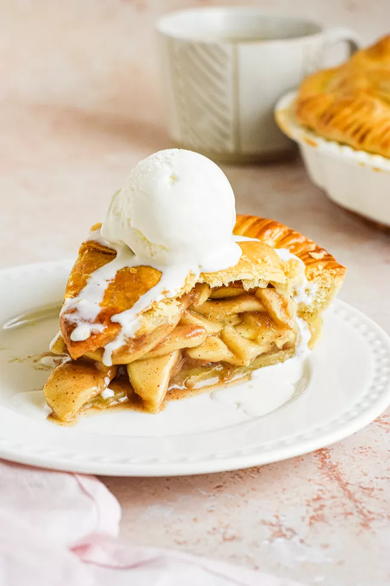

Apple pie
This is absolutely the best homemade apple pie you'll ever make! It has a flaky, buttery crust and a tender, lightly-spiced apple pie filling. Use a combination of apples for best flavor, and bake until the top is golden and the filling is bubbly!

INGREDIENTS:
For the pie:
- 3 pounds apples
- 1 tablespoon lemon juice
- 2/3 cup sugar
- 3 tablespoons all purpose flour
- 1/2 teaspoon ground cinnamon
- 1/4 teaspoon ground nutmeg
- 1 teaspoon vanilla extract
- 1 double crust sour cream pie dough
For the egg wash:
- 1 large egg yolk
- 1 tablespoon cream
INSTRUCTIONS:
- Peel, core and slice or roughly chop the apples into 1/4-inch to 1/2-inch slices or chunks.
As you cut your apple slices, add them to a large bowl and sprinkle them with the lemon juice or apple cider vinegar to help keep them from turning brown.
- Combine the sugar, flour and spices (allspice, nutmeg, cinnamon) in a bowl. Add the flour mixture to the apple slices and use your hands to distribute the flour through the apples so they are well coated.
Sprinkle with vanilla extract and brandy (if using) and stir to coat all the apples.
- Place one oven rack in the lowest position and put a large rimmed baking sheet on it to catch any drippings from the pie. Position a second rack the next rung up (still in the lower third of the oven).
- Remove one disk of pie dough from the refrigerator. Let sit at room temperature for 5 to 10 minutes. Place disk on a lightly floured, clean, flat surface. Using a rolling pin, roll out the pie dough to a 12-inch circle, about 1/8-inch thick.
As you roll out the dough, check to make sure it isn't sticking. If and when it starts to stick, gently lift it up and sprinkle a little more flour on the table surface or on the pie dough to keep the dough from sticking.
Gently place the rolled out dough onto a 9-inch pie plate. Press down to line the pie dish with the dough.
- Arrange the apple slices in the dough-lined pie plate. Mound the apples in the center.
- Roll out the second disk of dough, again to 12-inches. Gently place the second round of pie dough over the apples. Trim excess dough with kitchen shears, leaving a 3/4 inch overhang from the edges of the pie pan.
Fold the dough under itself so that the edge of the fold comes right to the edge of the pan. Press the top and bottom dough rounds together as you flute edges using thumb and forefinger or press with a fork.
- Place egg yolk and cream in a small bowl and use a fork to stir until well combined. Use a pastry brush to brush the egg wash over the top and fluted edges of the pie. Use a sharp knife to cut slits in the top of the pie crust for steam vents.
- Place pie on oven rack centered over the baking sheet on the rack below it to catch any drippings. Bake the pie at 375°F until crust begins to lightly brown, about 20 minutes, then reduce heat to 350°F.
Bake until the crust is golden brown and the juices are bubbling all over, an additional hour or up to another hour and a half, depending on the type of apples you are using. If you have an instant-read thermometer, it should read 200°F when inserted in the center of the pie.